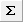
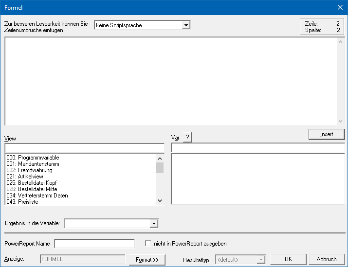
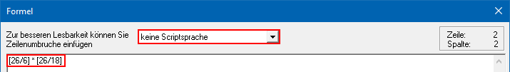
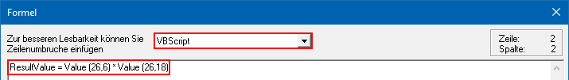
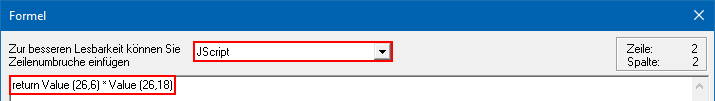
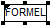
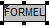
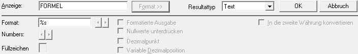

Ø

FormelMit dem Element "Formel" besteht die Möglichkeit, vorhandene Variablen mittels einer Formel zu verknüpfen und sich auf diese Weise eigene Variablen zu schaffen, um die Aussagefähigkeit des Formulars zu erhöhen. Diese Werte können ggf. auch über das Formular in die benutzerspezifischen Variablen der View 500 summiert werden.
Hinweis
Beispiele und weiterführende Information zu dem Thema VB-Script-Formeln können Sie dem Kapitel "Tipps und Tricks" - Unterkapitel "Spezialfunktionen der VB-Script-Formeln" entnehmen.
Eigenschaftsfenster "Formel"
Über das Eigenschaftsfenster "Formel" können die Formeln definiert werden.

Ø Formelsprache
Wenn das Formel-Fenster geöffnet wird, so muss zuerst die Sprache definiert werden, in welcher die Formel erfasst werden soll. Hierbei stehen folgende Möglichkeiten zur Verfügung:
ü Keine Scriptsprache
In diesem
Fall wird die mesonic-eigene Formelsprache verwendet. Hierbei können in der
Formel nur einfache Rechenoperationen durchgeführt werden.
ü VBScript
Damit wird die
Formelsprache VB-Script verwendet. Als Ergebnis wird immer der Wert
"ResultValue" beschickt.
ü Jscript
Damit wird die
Formelsprache Java-Script verwendet. Als Ergebnis wird immer der Wert "return"
beschickt.
Ø Formeleingabe
In das Eingabefeld der Formel wird in Abhängigkeit der Formelsprache der Code hinterlegt. Neben der eigentlichen Sprach-Syntax ist auch auf die unterschiedliche Schreibweise der Variablen zu achten:
ü Keine Scriptsprache: [21/2]
ü VBScript / JScript: Value (21,2)
Für Rechenoperationen werden die entsprechenden Operationstasten auf der Tastatur verwendet. Dabei sind folgende Operatoren möglich:
ü + -> Addition
ü - -> Subtraktion
ü * -> Multiplikation
ü / -> Division
ü ( -> linke Klammer
ü ) -> rechte Klammer
Prinzipiell gibt es keine Komplexitäts-Beschränkung für Formeln, so dass alle Möglichkeiten des Programms voll ausgenutzt werden können.
Achtung
Für Rechenoperation ist zu beachten, dass die Regel "Punktrechnung vor Strichrechnung" nicht gilt! Daher müssen entsprechende Klammerungen verwendet werden.
Beispiel - Keine Scriptsprache
Es soll die Rechenoperation "Menge geliefert" (T026.C006) * "Faktor 1 nach Formeleigabe" (T026.C018) ausgeführt werden.

Beispiel - VBScript
Es soll die Rechenoperation "Menge geliefert" (T026.C006) * "Faktor 1 nach Formeleigabe" (T026.C018) ausgeführt werden.

Beispiel - JScript
Es soll die Rechenoperation "Menge geliefert" (T026.C006) * "Faktor 1 nach Formeleigabe" (T026.C018) ausgeführt werden.

Ø View / Var
Über die Auswahllisten kann die View (d.h. die SQL-Tabelle)
und die Variable (d.h. die SQL-Spalte in einer Tabelle) bestimmt werden, welche
in die Formel eingetragen / übertragen werden soll. Mit Hilfe des Icons  kann das Fenster "Variable suchen"
geöffnet werden. In diesem ist es möglich per Volltextsuche nach Variablen zu
suchen.
kann das Fenster "Variable suchen"
geöffnet werden. In diesem ist es möglich per Volltextsuche nach Variablen zu
suchen.
Hinweis
Weitere Information entnehmen Sie bitte dem Kapitel Einfügen von Variablen.
Ø Insert
Mit Hilfe der Buttons "Insert" wird die ausgewählt Variable (siehe "View / Var") in das Eingabefeld der Formel übernommen. Je nachdem, welche Formelsprache gewählt wurde, wird die Variable wie folgt dargestellt:
ü Keine Scriptsprache: [21/2]
ü VBScript / JScript: Value (21,2)
Ø Ergebnis in die Variable
Mit dieser Option kann der ermittelte Wert einer Formel innerhalb eines Formulars in eine benutzerspezifische Variable (View 500 - User Defined Vars) abgelegt werden. Dadurch wird es z.B. ermöglich Summierungen oder weiterführende Berechnungen durchzuführen.
Folgende Variablen stehen in der Auswahlliste zur Verfügung:
ü 0 bis 99 - Numeric User Var x (Numerische Variablen)
ü 100 bis 354 - SQL Var x (Alphanumerische Variablen)
Achtung 1
Das Steuerelement "SQL Ausdruck" nutzt zur temporären Ablage der ermittelten Daten ebenfalls die Variablen ab 100 aufsteigend. D.h. wenn in einem Formular mit SQL-Abfragen und Formeln mit Wertspeicherung (alphanumerisch) gearbeitet wird, dann sollten die Formeln die Ergebnisse in die Variablen 500/354 absteigend übergeben, damit es zu keiner Überschneidung kommen kann.
Hinweis
Wenn ein ermittelter Wert direkt ausgegeben wird (d.h. unter "Ergebnis in die Variable" ist "Don´t put into var" eingestellt) dann wird die Formel im Formular Editor in weiß dargestellt, ansonsten in grau.
ü

- Ergebnis der Formel wird direkt ausgegebenü

- Ergebnis der Formel wird in eine benutzerdefinierte Variable zwischengespeichertAchtung 2
Wird eine Formel in eine benutzerspezifische Variable gerechnet, dann wird das Ergebnis der Formel selber nicht am Formular angedruckt. Soll ein Ausdruck zusätzlich erfolgen, dann muss die benutzerdefinierte Variable über das Element "Text Variable" oder "Numerische Variable" ausgegeben werden.
Ø PowerReport Name
An dieser Stelle kann der Name für die Anzeige innerhalb des Power Reports angepasst werden. Im Standard wird der Name der Variable übergeben.
Ø nicht in PowerReport ausgegeben
Mit Hilfe dieser Checkbox definiert werden, ob die Daten der Formel im Power Report zur Verfügung stehen sollen oder nicht.
Hinweis
Aktuell wird das Ergebnis einer Formel nur im Power Report angezeigt, wenn die Ausgabe über eine eigene Variable erfolgt. D.h. das Ergebnis muss in eine Variable abgestellt werden und diese muss dann wiederum als "Text Variable", "Numerische Variable" oder "Datum" ausgegeben werden.
Ø Anzeige
Handelt es sich um eine Formel des Formats "VBScript" oder "JScript", so kann im Eingabefeld "Anzeige" eine Betitelung für die Formeln hinterlegt werden. Dieses hat zur Folge, dass im Formular Editor statt des Worts "Formel" der hier eingetragene Text auf dem Bildschirm erscheint.
Hinweis
Der Text wird mit der Syntax "TITLE:xxx" (xxx => Beschriftung / Betitelung) als auskommentiertes Element innerhalb der Formel gespeichert.
Formatdefinition

Ø Format >>
Über die Anwahl des Buttons "Format >>" öffnet sich der Bereich der Formatdefinition, in welchem das Formelergebnis formatiert werden kann. Diese Formatierung ist nur bei den Formelsprachen "VBScript " und "JScript" möglich.
Hinweis
Die Einstellungen im Bereich "Formatdefinition" sind abhängig vom gewählten "Resultattyp".
Ø Resultattyp
An dieser Stelle kann definiert werden, wie die Formel das Ergebnis interpretieren soll. Hierfür stehen die folgenden Auswahlen zur Verfügung:
ü <default>
Die Formel
interpretiert eigenständig das Ergebnis.
ü Text
Die Formel interpretiert
das Ergebnis als "Text Variable". In dem Feld "Format" wird dementsprechend ein
"%s" dargestellt.
ü Numerisch
Die Formel
interpretiert das Ergebnis als "Numerische Variable". In dem Feld "Format" wird
die Zahlenformatierung dargestellt.
ü Datum
Ø Format
Je nach Resultattyp wird hier "%s" (Text), "###,###,###.##" (numerisch) oder "{DATETIME}" (Datum) dargestellt und kann beeinflusst werden.
Hinweis zu "numerisch"
Das Format bestimmt das Darstellungsformat der Variable im
Ausdruck. Mit den Buttons  kann die
Position des Trennzeichens (Komma) verändert werden.
kann die
Position des Trennzeichens (Komma) verändert werden.
ü # - Raute
Die Raute stellt im
Format den Platzhalter für eine Zahl dar. Wenn die auszugebende Zahl größer als
das definierte Format ist (Stellen vor dem Dezimalpunkt, d.h. dem Komma) dann
werden bei der Ausgabe nur Rauten angezeigt.
ü , - Komma
Das Komma stellt im
Format das Formatierungstrennzeichen dar. Bei der Ausgabe eines Formulars wird
dieses als "Punkt" dargestellt.
Hinweis
Damit die Formatierung ausgedruckt wird muss die Option "Formatierte Ausgabe" aktiviert werden.
ü . - Punkt
Der Punkt stellt im
Format das Dezimaltrennzeichen für die Nachkommastellen dar. Bei der Ausgabe
eines Formulars wird dieser als "Komma" dargestellt.
Hinweis
Ob die Nachkommastellen gemäß dem Format oder dynamisch ermittelt werden sollen wird in der Option "Dezimalpunkt" definiert.
Ø Numbers (nur bei Typ "numerisch")
Mit Hilfe der Buttons kann die Anzahl der Stellen (Rauten im
Format) definiert werden, welche gedruckt werden sollen. Grundsätzlich ist dabei
zu beachten, dass immer die Anzahl der gewünschten Stellen + 1 zusätzliche
Stelle vorhanden sein sollte.
Beispiel
Es soll der Summenrabatt angedruckt werden, wobei dieser im Normalfall nur 2 Stellen lang ist. Wenn man aber berücksichtigt, dass noch ein Vorzeichen dazukommt, müssen mindestens 3 Stellen in der Formatierung vorhanden sein.
Ø Füllzeichen (nur bei Typ "numerisch")
Auswahl eines Füllzeichens für die Ausgabe. Abhängig von der Anzahl der anzudruckenden Zeichen (einzustellen bei der Option "Numbers") und des angedruckten Wertes wird das Feld mit dem hinterlegten Zeichen aufgefüllt.
Beispiel
Für eine Dateiausgabe werden die Zahlen immer mit 10 Zeichen benötigt. Aus diesem Grund wurde das Format auf "##########" gestellt. Durch die Eingabe eines Füllzeichens, z.B. "*", erfolgt die Ausgabe nun immer 10stellig, d.h. aus der Zahl 123456 wird ****123456.
Ø Formatierte Ausgabe (nur bei Typ "numerisch")
Bei aktivierter Option wird das Formelergebnis mit dem im Feld "Format" definierten Formatierungstrennzeichen angedruckt.
Ø Nullwerte unterdrücken (nur bei Typ "numerisch")
Bei aktivierter Option wird der Andruck von Null-Werten verhindert.
Ø Dezimalpunkt (nur bei Typ "numerisch")
Bei aktivierter Option wird die Variable mit einem Dezimalpunkt (Dezimaltrennzeichen für die Nachkommastellen) angedruckt.
Ø Variable Dezimalposition (nur bei Typ "numerisch")
Bei aktivierter Option werden die Nachkommastellen variabel angedruckt. Die Anzahl der Nachkommastellen wird in den Stammdaten (Artikelgruppen - Komma Menge1) festgelegt. D.h. die Funktion ist nur dann sinnvoll, wenn die Formel bezogen für einen Artikel ausgeführt wird.
Ø In die zweite Währung konvertieren (nur bei Typ "numerisch")
Ist diese Checkbox aktiviert, wird der Wert in die zweite Währung, welche im Mandantenstamm hinterlegt ist (Register "Stamm", Feld "Landeswährung 2"), umgerechnet. Damit können alle Werte in beiden verwendeten Währungen angedruckt werden.